In this lab you will write a small number of slightly longer, more complex functions. The algorithms required are not difficult, but you will need to think carefully about the requirements, and test your code thoroughly to meet them. These exerises are chosen because it is easy to get them nearly right, but they may require some thought to get exactly right.
4, add it to the repo, and make it the current directory:
$ mkdir 4 $ git add 4 $ cd 4
X in the following rules.
imgops.c to help you.
tX.c file for each task X, e.g. t1.c, and link it's own main() and a reference implementation of imgops.c.
test.c to help you test your tasks.
imgops.c. If you want to call functions from imgops.c, compile this file into your program: do not paste those functions into tX.c.
tX.c: this will prevent it from building
when the grading robot tests it. Your main() shoud be in another file, which will not be graded.
draw.h in tX.c: these can be used in your test program but not in the submitted file itself.
You must write a function that draws a filled circle into an image array of the same type as in Lab 3.
t1.c.
t1.c should contain the function draw_circle() and agree exactly with this function declaration:
void draw_circle( uint8_t img[],
unsigned int cols,
unsigned int rows,
int x,
int y,
int r,
uint8_t color );
img, and its sizes (cols,rows) should be interpreted in the same way as for Lab 3.
You might find these examples helpful for interpreting the specs. In every case the image array img has been zeroed in advance.
draw_circle( img, 16 16, 8, 8, 1, 255);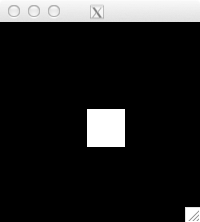
Note: this is 9 white pixels in the center of the image. Why does a radius of 1 cause 9 pixels to be filled? We are considering all the points in the pixel and not just the point at the centre of the pixel. This diagram shows all the pixels that contain points less than R=1 from the center of the pixel at (x,y):
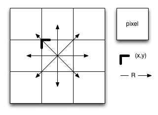
for( int i=10; i>0; i-- )
draw_circle( img, 64, 32, 32, 16, 2*i, 200/i+55);
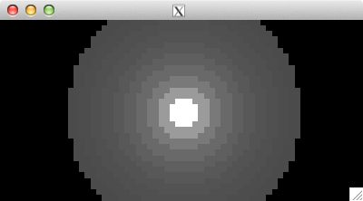
Draw the outline of a rectangle in the specified color.
t2.c.
t2.c should contain the function draw_rectangle() and agree exactly with this function declaration:
void draw_rectangle( uint8_t array[], unsigned int cols, unsigned int rows, int x, int y, int rect_width, int rect_height, uint8_t color );
rect_width pixels wide by rect_height pixels tall.
draw_rectangle( img, w, h, w/2, h/2, -5, -5, 128 ); draw_rectangle( img, w, h, w/2, h/2, 5, 5, 255 );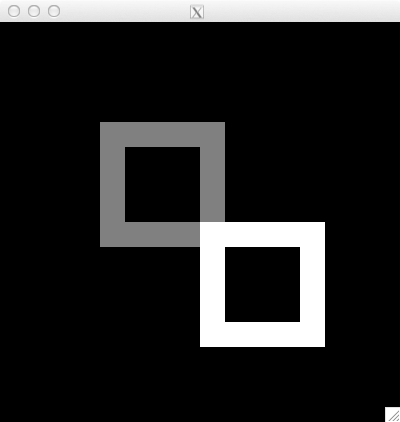
Compute one step of Conway's Game of Life. The rules and history of the Game of Life can be found here.
The universe of the Game of Life is an infinite two-dimensional orthogonal grid of square cells, each of which is in one of two possible states, alive or dead. Every cell interacts with its eight neighbours, which are the cells that are horizontally, vertically, or diagonally adjacent. At each step in time, the following transitions occur:
The initial pattern constitutes the seed of the system. The first generation is created by applying the above rules simultaneously to every cell in the seed - births and deaths occur simultaneously, and the discrete moment at which this happens is sometimes called a tick (in other words, each generation is a pure function of the preceding one). The rules continue to be applied repeatedly to create further generations.
t3.c.
t3.c should contain the function life() and agree exactly with this function declaration:
void life( uint8_t array[], unsigned int cols, unsigned int rows );
Your function must correctly compute a single step of Life, so that it can be used in a loop to create a Life simulation as shown here.
int glider[][2] = { {1,0}, {2,1}, {0,2}, {1,2}, {2,2} };
for( int i=0; i<5; i++ )
set_pixel( img, w, h, glider[i][0], glider[i][1], 255 );
for( int i=0; i<32; i++ )
{
draw_image_grey( img, w, h );
life( img, w, h );
}
draw_image_grey( img, w, h );
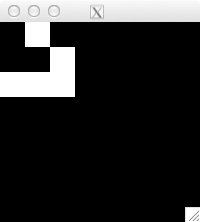
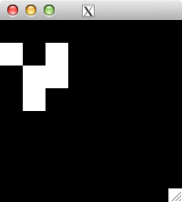
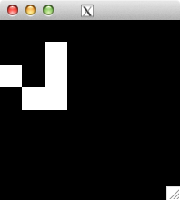
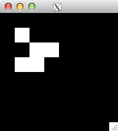
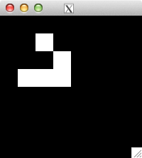
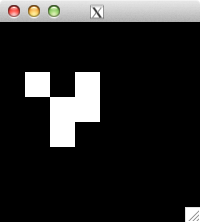
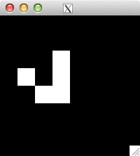
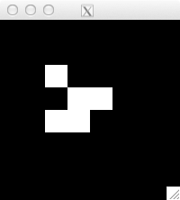
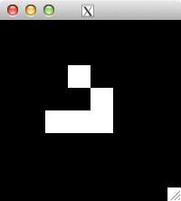
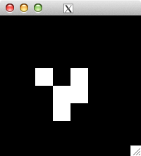
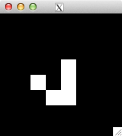
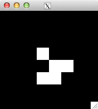
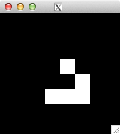
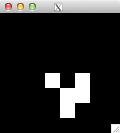
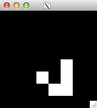
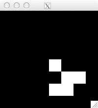
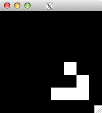
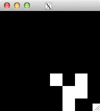
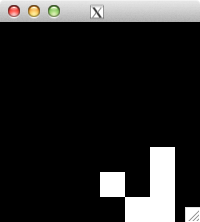
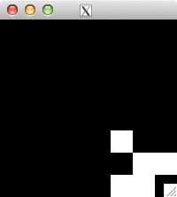
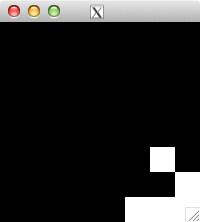
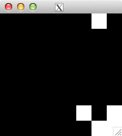
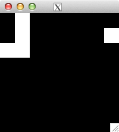
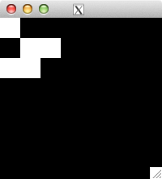
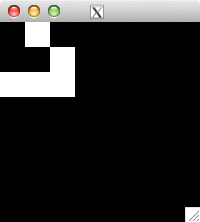
(back where we started!)